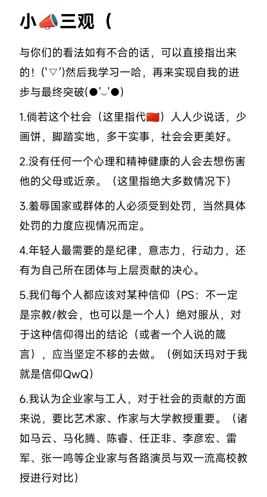
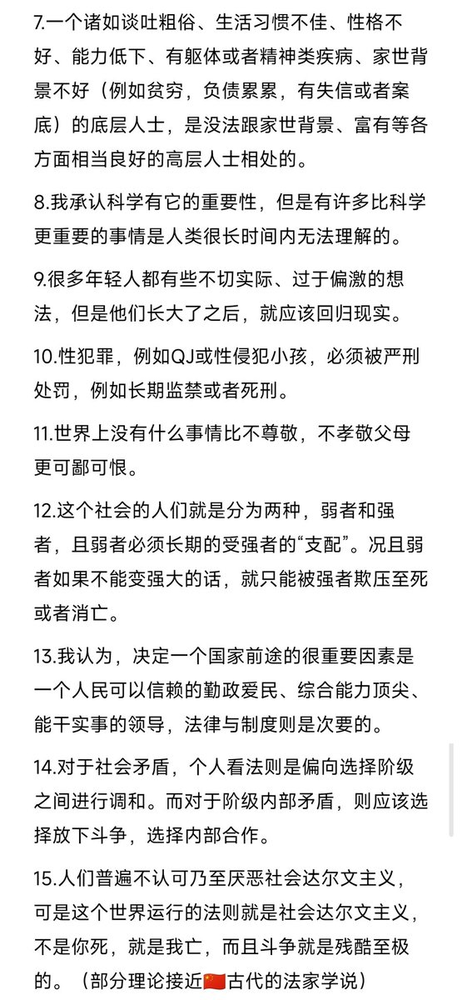
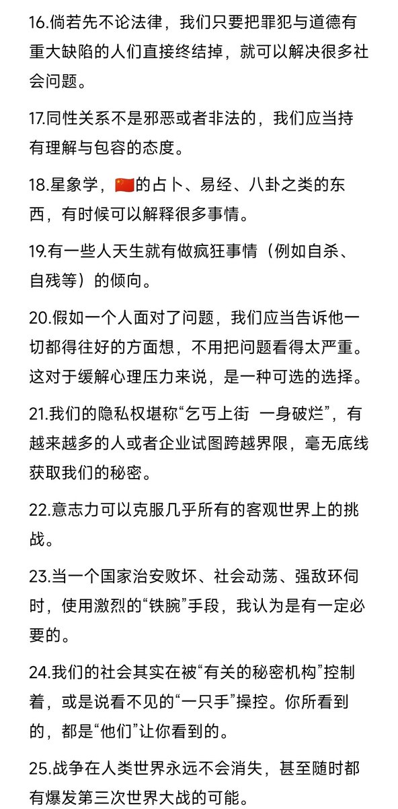
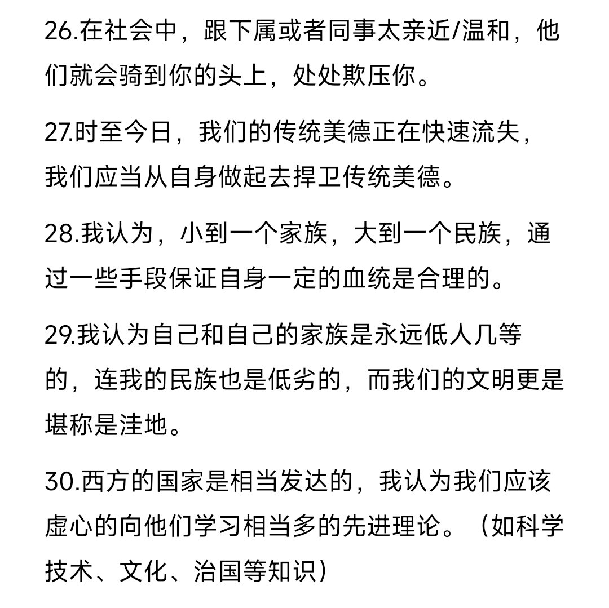

时光如梭，原来都过去了两年多了啊...(=ＴェＴ=)
没有永恒的事物，也没有永恒的理念，岁月如梭，斗转星移，当年的那些“推友”，有些已经走了...˃ʍ˂
人类啊，当你回忆过去的时候，也许百感交集，心如乱麻，但总归要面对过去和未来的...dT-Tb
谢谢曾经给沃不同意见的你们，沃也悄然的*在变*...(●'◡'●)

没有永恒的事物，也没有永恒的理念，岁月如梭，斗转星移，当年的那些“推友”，有些已经走了...˃ʍ˂
人类啊，当你回忆过去的时候，也许百感交集，心如乱麻，但总归要面对过去和未来的...dT-Tb
谢谢曾经给沃不同意见的你们，沃也悄然的*在变*...(●'◡'●)




个人一点看法（也可能是三观），emmm...（•﹏•）
总之，如果觉得我有不对的，欢迎各位与我探讨或者直接指出来错误，我将抽空进行回复并且在日后的生活中进行逐步改正，蟹蟹侬(≧ω≦)
但是我也怕被薄纱...(˘̩̩̩ε˘̩ƪ)算了...就这样了吧... https://t.co/48WfgTtaKG
总之，如果觉得我有不对的，欢迎各位与我探讨或者直接指出来错误，我将抽空进行回复并且在日后的生活中进行逐步改正，蟹蟹侬(≧ω≦)
但是我也怕被薄纱...(˘̩̩̩ε˘̩ƪ)算了...就这样了吧... https://t.co/48WfgTtaKG